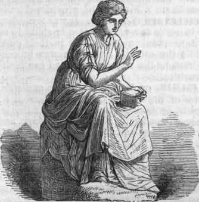

Welcome to the Mathematical World!
Callippus: Calendar Guy
Refiner of the Metonic Cycle and Contributor to Planetary Models
Callippus (c. 370 BCE – c. 300 BCE) was a Greek astronomer and mathematician, remembered for refining the work of Meton of Athens and creating the Callippic Cycle — a more accurate system for reconciling the solar year with the lunar calendar. He worked in Athens alongside Eudoxus of Cnidus and later collaborated with Aristotle in the Lyceum, where his observations contributed to the understanding of celestial motion.
Background
Born in Cyzicus, on the coast of Asia Minor (modern-day Turkey), Callippus traveled to Athens, where he joined Eudoxus and studied astronomy in detail. His careful observations of the Sun, Moon, and stars allowed him to detect small errors in existing astronomical cycles.
Contributions
(a) The Callippic Cycle
The Greeks faced a fundamental challenge: the lunar month (~29.53 days) does not divide evenly into the solar year (~365.24 days). To align the lunar and solar calendars, Meton (432 BCE) proposed the Metonic Cycle, where:
\[ 19 \text{ solar years } \approx 235 \text{ lunar months} \]
However, this approximation was slightly inaccurate, drifting by about 7 hours over 19 years.
Callippus refined this with his Callippic Cycle:
- He combined 4 Metonic cycles: \(4 \times 19 = 76\) years, which equals approximately \(4 \times 235 = 940\) lunar months.
- He then subtracted 1 day from the total to correct the error.
Thus, in Callippus’s system:
\[ 76 \text{ solar years } = 940 \text{ lunar months } = 27,759 \text{ days.} \]
This cycle was far more accurate and was used for centuries in Greek and later Babylonian astronomy.
(b) Planetary Models
Callippus also improved upon Eudoxus’s model of homocentric spheres, which attempted to describe planetary motion using concentric spheres.
- Eudoxus used 27 spheres to model the movements of the Sun, Moon, and planets.
- Callippus added 7 more spheres, making a total of \(27 + 7 = 34\), to account for discrepancies in planetary motion.
This refinement helped Aristotle incorporate more accurate astronomical models into his philosophy of the cosmos.
Influence and Legacy
- Calendar Science: The Callippic Cycle became a cornerstone of ancient Greek timekeeping and was later adopted in the astronomical tables of Hipparchus and Ptolemy.
- Astronomy: His refinements to Eudoxus’s model prepared the way for more precise systems, leading eventually to the Ptolemaic model.
- Philosophy: Collaborating with Aristotle, Callippus’s observations supported the Lyceum’s systematic studies of the heavens, blending philosophy with mathematical science.
Legacy
Callippus of Cyzicus is remembered as a meticulous observer and practical mathematician who improved both astronomical modeling and calendar accuracy. By refining cycles of time and planetary motion, he helped bridge the gap between early Greek cosmology and the more systematic astronomy that followed.

All rights reserved by the Mathematical Unity
Contact: +8801400044645
Email: mathematicalhorse1453@gmail.com
Our Discord Server: Mathematical Unity [Ulus Riyadiyat]